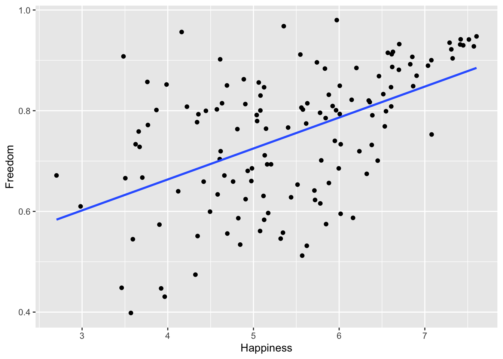
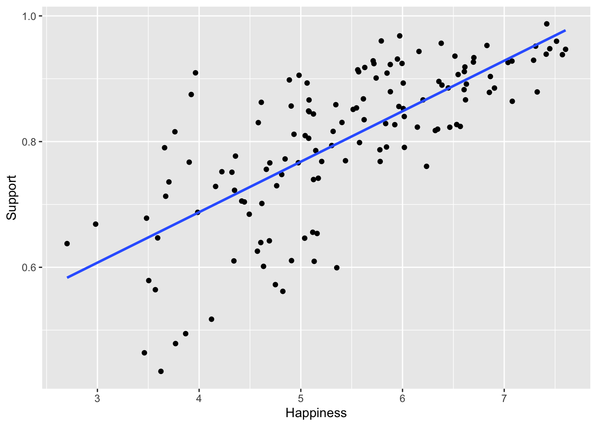
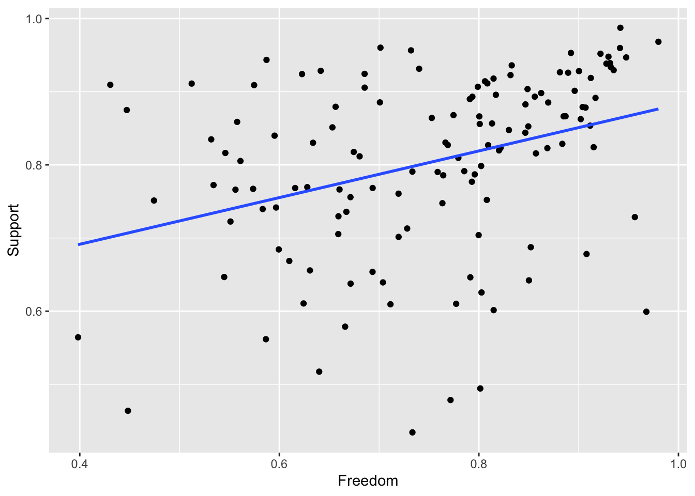

These answers are only one way to do it. The great thing about R is that there are many roads to the right answer. You do not need to have exactly the same code to get full points. The key is here to show you merely one solution of the homework.
set.seed(55555)##Load packageslibrary(tidyverse)
── Attaching core tidyverse packages ──────────────────────── tidyverse 2.0.0 ──
✔ dplyr 1.1.4 ✔ readr 2.1.5
✔ forcats 1.0.0 ✔ stringr 1.5.1
✔ ggplot2 3.5.1 ✔ tibble 3.2.1
✔ lubridate 1.9.4 ✔ tidyr 1.3.1
✔ purrr 1.0.2
── Conflicts ────────────────────────────────────────── tidyverse_conflicts() ──
✖ dplyr::filter() masks stats::filter()
✖ dplyr::lag() masks stats::lag()
ℹ Use the conflicted package (<http://conflicted.r-lib.org/>) to force all conflicts to become errors
library(psych)
Attaching package: 'psych'
The following objects are masked from 'package:ggplot2':
%+%, alpha
library(broom)library(emmeans)
Welcome to emmeans.
Caution: You lose important information if you filter this package's results.
See '? untidy'
Load data
data <-read.csv("homework-world.csv")data$World <-as.factor(data$World)
Q1 Calculate descriptive statistics for each of the 4 World groups.
That is, you should get the mean GDP for countries that are coded as 1 in the World variable, mean GDP for countries coded as 2 in the World variable etc. This should include (it’s OK if more are included, but at least these): - mean - median - range - min & max - standard deviation - skew & kurtosis
For this question, you can use various coding approaches to calculate each of the descriptives separately for each group.
##Create a list of the variables we are interested incontinuous_vars <-c("Happiness", "GDP", "Support", "Life", "Freedom", "Generosity", "Corruption")##Define a function to calculate all our descriptive statistics within a given World group ##for a given variablestats <-function(data, world_group, variable){##Filter dataset to only the World group of interest data <- data %>%filter(World == world_group)##Calculate descriptive statistics on the variable of interest stat <-data.frame(mean =mean(na.omit(data[,paste0(variable)])),median =median(na.omit(data[,paste0(variable)])),range =max(na.omit(data[,paste0(variable)])) -min(na.omit(data[,paste0(variable)])),min =min(na.omit(data[,paste0(variable)])),max =max(na.omit(data[,paste0(variable)])),sd =sd(na.omit(data[,paste0(variable)])),##skew and kurtosis = loaded from "psych" packageskew =skew(na.omit(data[,paste0(variable)])),kurtosis =kurtosi(na.omit(data[,paste0(variable)])))##Add variable namerownames(stat) <- variablereturn(stat)}##First World descriptives###NOTE: This code will use the function above to do the same thing as calculating###mean(na.omit(filter(data, World == 1)))$Happiness###median(na.omit(filter(data, World == 1)))$Happiness###and so on..., but more efficientlyWorld1_descriptives <-data.frame()for(i in continuous_vars){ World1_descriptives <-rbind(World1_descriptives, stats(data, 1, i))}##Second World descriptivesWorld2_descriptives <-data.frame()for(i in continuous_vars){ World2_descriptives <-rbind(World2_descriptives, stats(data, 2, i))}##Third World descriptivesWorld3_descriptives <-data.frame()for(i in continuous_vars){ World3_descriptives <-rbind(World3_descriptives, stats(data, 3, i))}##Other descriptivesWorld4_descriptives <-data.frame()for(i in continuous_vars){ World4_descriptives <-rbind(World4_descriptives, stats(data, 4, i))}##Print descriptives for each of the 4 groupsWorld1_descriptives
mean median range min max sd
Happiness 6.70480547 6.88408303 2.5225673 5.0808663 7.6034336 0.73846264
GDP 10.60014923 10.64544297 1.5657673 9.8642025 11.4299698 0.32164763
Support 0.91106403 0.92701676 0.2189929 0.7683506 0.9873435 0.04870113
Life 71.56475957 71.54143905 9.1287765 65.6959152 74.8246918 1.70742532
Freedom 0.83024829 0.87945190 0.4158842 0.5317363 0.9476205 0.12443371
Generosity 0.08903921 0.09993881 0.5995939 -0.2789414 0.3206525 0.17627812
Corruption 0.53832097 0.46245918 0.7551621 0.1858887 0.9410508 0.24463890
skew kurtosis
Happiness -0.6065804 -0.9398446
GDP 0.1411772 0.6439861
Support -1.0414418 0.8896961
Life -1.2660634 3.6405232
Freedom -1.0713275 -0.1320270
Generosity -0.4830215 -1.0985804
Corruption 0.1443590 -1.4406387
World2_descriptives
mean median range min max sd
Happiness 5.41721521 5.6289086 2.6434746 3.9645429 6.6080174 0.6462323
GDP 9.52518320 9.7255678 2.4384503 7.8696475 10.3080978 0.6949767
Support 0.83666469 0.8587338 0.4508536 0.5173716 0.9682252 0.1101465
Life 65.13686837 65.3385010 12.0708466 58.4413452 70.5121918 2.8034015
Freedom 0.69404760 0.6854547 0.5493451 0.4305920 0.9799371 0.1234654
Generosity -0.07555961 -0.1006917 0.6354753 -0.2624048 0.3730705 0.1350927
Corruption 0.81254055 0.8585415 0.4907340 0.4709169 0.9616510 0.1419362
skew kurtosis
Happiness -0.5471119 -0.42827226
GDP -0.8399644 -0.40860352
Support -1.0880440 0.61423428
Life -0.3686089 -0.31370397
Freedom 0.2169642 -0.41724977
Generosity 1.5668417 2.77127207
Corruption -1.0444582 -0.08270774
World3_descriptives
mean median range min max sd
Happiness 4.09701201 3.985916138 2.6520536 2.70159125 5.3536448 0.6370851
GDP 7.57284077 7.416408062 2.3556876 6.61396551 8.9696531 0.5994599
Support 0.67251744 0.678143561 0.4405574 0.43438852 0.8749459 0.1092345
Life 53.45368957 53.518108370 17.9869728 43.74033737 61.7273102 4.4635773
Freedom 0.71735941 0.733383596 0.5695738 0.39829549 0.9678693 0.1472135
Generosity 0.03863014 0.001502594 0.4555688 -0.14344171 0.3121271 0.1230534
Corruption 0.74844688 0.800046742 0.8508316 0.09460447 0.9454361 0.1750290
skew kurtosis
Happiness -0.07553877 -0.6599127
GDP 0.38636494 -0.3982235
Support -0.22544428 -0.5128556
Life -0.16281019 -0.4098541
Freedom -0.37170455 -0.6048082
Generosity 0.70846934 -0.4048976
Corruption -2.08568928 4.9368252
World4_descriptives
mean median range min max sd
Happiness 5.53322733 5.55360675 3.9860127 3.46191287 7.4479256 0.8821241
GDP 9.22070514 9.34630966 3.3854480 7.43031550 10.8157635 0.6853202
Support 0.80131986 0.82283747 0.4838877 0.46391287 0.9478006 0.1009110
Life 63.19936505 64.18115997 31.0005035 45.04415894 76.0446625 6.4534019
Freedom 0.76253840 0.79116327 0.4815910 0.44827086 0.9298619 0.1194039
Generosity -0.01301398 -0.04513925 0.7199037 -0.26247421 0.4574295 0.1520463
Corruption 0.78094526 0.81396091 0.8470234 0.09894388 0.9459673 0.1509747
skew kurtosis
Happiness -0.1774602 -0.69947279
GDP -0.2943383 0.04544817
Support -1.2048728 1.23805282
Life -1.0056401 1.00840124
Freedom -0.6542359 -0.43184493
Generosity 0.8969829 0.82680495
Corruption -2.8892466 9.69411832
##NOTE: The psych package also has a very handy function named describeBy() that will give you ##all the same stuff as the code above (plus some nice bonus info!):##describeBy(data[,c(continuous_vars, "World")], group = data$World)
##Q2 Standardize all numeric variables in the dataset, and re-run your descriptive statistics. Are there any variables that you would be concerned about? If so, which ones and why? If not, why are you not concerned?
#Convert unstandardized variables into standardized variables #using the "scale()" function:data_z <-mutate_if(data, is.numeric, scale)#Descriptive statistics of standardized variables for the whole data set:describe(data_z)
#Descriptive statistics of standardized variables grouped by World:describeBy(x = data_z, group = data_z$World)
Descriptive statistics by group
group: 1
vars n mean sd median trimmed mad min max range skew
Country 1 24 70.54 41.40 64.00 71.25 50.41 4.00 130.00 126.00 -0.07
Happiness 2 24 1.15 0.67 1.31 1.20 0.69 -0.32 1.96 2.28 -0.61
GDP 3 24 1.19 0.28 1.23 1.19 0.25 0.56 1.91 1.35 0.14
Support 4 24 0.89 0.40 1.02 0.93 0.31 -0.28 1.51 1.78 -1.04
Life 5 24 1.13 0.23 1.13 1.14 0.18 0.34 1.57 1.22 -1.27
Freedom 6 24 0.59 0.93 0.96 0.71 0.60 -1.64 1.46 3.11 -1.07
Generosity 7 23 0.55 1.13 0.62 0.61 1.30 -1.80 2.03 3.83 -0.48
Corruption 8 24 -0.98 1.23 -1.36 -1.00 1.57 -2.75 1.04 3.78 0.14
World 9 24 1.00 0.00 1.00 1.00 0.00 1.00 1.00 0.00 NaN
kurtosis se
Country -1.40 8.45
Happiness -0.94 0.14
GDP 0.64 0.06
Support 0.89 0.08
Life 3.64 0.05
Freedom -0.13 0.19
Generosity -1.10 0.23
Corruption -1.44 0.25
World NaN 0.00
------------------------------------------------------------
group: 2
vars n mean sd median trimmed mad min max range skew
Country 1 27 68.04 42.14 69.00 68.43 54.86 1.00 132.00 131.00 -0.13
Happiness 2 27 -0.01 0.58 0.18 0.02 0.52 -1.32 1.06 2.38 -0.55
GDP 3 27 0.26 0.60 0.44 0.32 0.59 -1.17 0.94 2.11 -0.84
Support 4 27 0.28 0.90 0.46 0.37 0.84 -2.32 1.35 3.67 -1.09
Life 5 27 0.27 0.38 0.30 0.28 0.34 -0.63 0.99 1.62 -0.37
Freedom 6 27 -0.43 0.92 -0.49 -0.45 1.09 -2.40 1.71 4.10 0.22
Generosity 7 27 -0.50 0.86 -0.66 -0.62 0.58 -1.70 2.36 4.06 1.57
Corruption 8 26 0.39 0.71 0.62 0.47 0.50 -1.32 1.14 2.46 -1.04
World 9 27 2.00 0.00 2.00 2.00 0.00 2.00 2.00 0.00 NaN
kurtosis se
Country -1.37 8.11
Happiness -0.43 0.11
GDP -0.41 0.12
Support 0.61 0.17
Life -0.31 0.07
Freedom -0.42 0.18
Generosity 2.77 0.17
Corruption -0.08 0.14
World NaN 0.00
------------------------------------------------------------
group: 3
vars n mean sd median trimmed mad min max range skew
Country 1 27 64.26 39.41 72.00 63.39 51.89 8.00 135.00 127.00 0.10
Happiness 2 27 -1.20 0.57 -1.30 -1.19 0.58 -2.46 -0.07 2.39 -0.08
GDP 3 25 -1.43 0.52 -1.56 -1.45 0.49 -2.26 -0.22 2.04 0.39
Support 4 27 -1.06 0.89 -1.01 -1.04 0.88 -2.99 0.59 3.59 -0.23
Life 5 27 -1.30 0.60 -1.29 -1.28 0.56 -2.60 -0.19 2.41 -0.16
Freedom 6 27 -0.26 1.10 -0.14 -0.22 1.07 -2.64 1.62 4.25 -0.37
Generosity 7 25 0.23 0.79 -0.01 0.18 0.58 -0.94 1.97 2.91 0.71
Corruption 8 27 0.07 0.88 0.33 0.21 0.50 -3.20 1.06 4.26 -2.09
World 9 27 3.00 0.00 3.00 3.00 0.00 3.00 3.00 0.00 NaN
kurtosis se
Country -1.39 7.58
Happiness -0.66 0.11
GDP -0.40 0.10
Support -0.51 0.17
Life -0.41 0.12
Freedom -0.60 0.21
Generosity -0.40 0.16
Corruption 4.94 0.17
World NaN 0.00
------------------------------------------------------------
group: 4
vars n mean sd median trimmed mad min max range skew
Country 1 58 69.84 38.14 67.00 69.50 45.96 2.00 136.00 134.00 0.06
Happiness 2 58 0.09 0.80 0.11 0.12 0.96 -1.78 1.82 3.60 -0.18
GDP 3 45 0.00 0.59 0.11 0.02 0.49 -1.55 1.38 2.93 -0.29
Support 4 57 -0.01 0.82 0.17 0.09 0.67 -2.75 1.19 3.94 -1.20
Life 5 57 0.01 0.86 0.14 0.10 0.62 -2.42 1.73 4.15 -1.01
Freedom 6 54 0.08 0.89 0.30 0.15 1.00 -2.27 1.33 3.60 -0.65
Generosity 7 45 -0.10 0.97 -0.31 -0.18 0.77 -1.70 2.90 4.60 0.90
Corruption 8 48 0.24 0.76 0.40 0.35 0.39 -3.18 1.06 4.24 -2.89
World 9 58 4.00 0.00 4.00 4.00 0.00 4.00 4.00 0.00 NaN
kurtosis se
Country -1.20 5.01
Happiness -0.70 0.10
GDP 0.05 0.09
Support 1.24 0.11
Life 1.01 0.11
Freedom -0.43 0.12
Generosity 0.83 0.14
Corruption 9.69 0.11
World NaN 0.00
This is an open question, so a number of responses are valid.
##Q3 Calculate the population variance and standard deviations by hand (aka don’t use a particular variance or standard deviation function) for any 3 numeric variables.
Note the na.omit() function can be handy with missing data. This will get rid of any NA values, and make your calculations easier.
Calculate the population variance using the formula sum((X - M)^2)/N. Then, take the square root of the variance to get the population standard deviation. Because this is a population variance, N is used as the denominator rather than N - 1 (as in the sample variance).
##Define a function to calculate the population variance and standard deviation by handdispersion <-function(variable){ x <-na.omit(data[,variable]) variance <-sum((x -mean(x))^2)/length(x) sd <-sqrt(variance) result <-data.frame(variance, sd)rownames(result) <- variablereturn(result)}##Run the function on 3 variables, save each result to a dataframevariances <-data.frame()for(i inc("Happiness", "GDP", "Support")){ variances <-rbind(variances, dispersion(i))}variances
variance sd
Happiness 1.2199099 1.1044953
GDP 1.3246706 1.1509433
Support 0.0149711 0.1223564
##Q4 Create a violin plot (a new and improved box plot) for the Corruption variable, with plots for the four groups defined by the new variable, World. What does this graph tell you, in broad strokes, about:
group differences in corruption central tendency?
group differences in corruption variability?
the presence of outliers within each group?
#Violin Plot Code:ggplot(data = data, aes(x = World, y = Corruption, fill = World))+geom_violin()+theme_classic()
Warning: Removed 11 rows containing non-finite outside the scale range
(`stat_ydensity()`).
As reflected in the medians, relative to the differences between other country groups, the central tendency for “first-world” countries is substantially lower than the other groups.
Relative to the differences between other country groups, there is substantially more variation in the Corruption distribution for “first-world” countries than the other groups.
Second, Third, and fourth world counties appear to have outliers which are scewing the data. The outliers in third and fourth world countries appear to be more extreme.
##Q5 ##Part A Calculate the correlation for Happiness & Freedom, Happiness & Support, and finally Freedom & Support.
###Part B Now make a scatterplot for each of these 3 relationships. Include a linear best fit “regresion” line (a straight line). - How does the best fit lines correspond to the correlations that you got in Part A of this question? - Does a linear relationship seem to describe any of the pairwise relationships?
##Calculate 3 correlationscor(data$Happiness, data$Freedom, use ="pairwise")
[1] 0.5145117
cor(data$Happiness, data$Support, use ="pairwise")
[1] 0.7258971
cor(data$Freedom, data$Support, use ="pairwise")
[1] 0.3484636
##Plot the three relationships###Happiness ~ Freedomggplot(aes(x = Happiness, y = Freedom), data = data)+geom_point()+geom_smooth(method ="lm", se = F)
`geom_smooth()` using formula = 'y ~ x'
Warning: Removed 4 rows containing non-finite outside the scale range
(`stat_smooth()`).
Warning: Removed 4 rows containing missing values or values outside the scale range
(`geom_point()`).

###Happiness ~ Supportggplot(aes(x = Happiness, y = Support), data = data)+geom_point()+geom_smooth(method ="lm", se = F)
`geom_smooth()` using formula = 'y ~ x'
Warning: Removed 1 row containing non-finite outside the scale range
(`stat_smooth()`).
Warning: Removed 1 row containing missing values or values outside the scale range
(`geom_point()`).

###Freedom ~ Supportggplot(aes(x = Freedom, y = Support), data = data)+geom_point()+geom_smooth(method ="lm", se = F)
`geom_smooth()` using formula = 'y ~ x'
Warning: Removed 4 rows containing non-finite outside the scale range
(`stat_smooth()`).
Warning: Removed 4 rows containing missing values or values outside the scale range
(`geom_point()`).

The positive slope of the three regression lines corresponds to the positive correlations between eacah pair of variables. The spread of datapoints around the regression line is (a) tightest for Happiness and Support showing a strong correlation, (b) slightly less tight for Happiness and Freedom showing a slightly weaker correlation, (c) least tight for Freedom and Support showing the weakest correlation.
Each of the three pairwise relationships seems to be captured by a positive linear relationship. For the relationship between Freedom and Support, a large portion of the data are in the upper right quadrant of the scatterplot and relatively less data is in the lower quadrants, making the linear relationship somewhat less clear.
##Q6
####Part A Calculate the regression coefficient by hand for Happiness & Freedom with Happiness as the DV, and Freedom as the IV.
Interpret the regression coefficient
Without doing any new calculations, assume that the regression coefficient you just calculated was the output of a standardized regression i.e., both your Y and X were standardized. Interpret this regression coefficient.
The formula for the beta1 regression coefficient is (rxy * Sy) / Sx:
#Calculation of the Regression Coefficient:#Correlation of Freedom and Happiness:rFreeHapp <-cor(data$Freedom, data$Happiness, use ="pairwise")#Standard Deviation of Freedom:sdFree <-sd(na.omit(data$Freedom))#Standard Deviation of Happiness:sdHapp <-sd(na.omit(data$Happiness))beta1 <- (rFreeHapp * sdHapp) / sdFreebeta1
[1] 4.260772
#Calculation of the Regression Coefficient if the variables were standardized:#Correlation of Freedom and Happiness:rFreeHapp_z <-as.numeric(cor(data_z$Freedom, data_z$Happiness, use ="pairwise"))#Standard Deviation of Freedom:sdFree_z <-sd(na.omit(data_z$Freedom))#Standard Deviation of Happiness:sdHapp_z <-sd(na.omit(data_z$Happiness))beta1_z <- (rFreeHapp_z * sdHapp_z) / sdFree_zbeta1_z
[1] 0.5145117
Interpreting the regression coefficient in raw units: For a one unit increase in Freedom, Happiness is expected to increase by 4.43.
Interpreting the regression coefficient in raw units as if it were standardized: For a one standard deviation increase in Freedom, Happiness is expected to increase by 4.43 standard deviations.
regression coefficient in standardized units: For a one standard deviation increase in Freedom, Happiness is expected to increase by 0.51 standard deviations.
####Part B Calculate the standard error of the regression coefficient ‘by hand’ using sigma.
The formula for the standard error of the regression coefficient (beta1) is RSE / sqrt(SSD), where RSE is the residual Standard Error (Sigma) and SSD is the Sum of Squared Deviations.
#Model for the Happiness predicted by Freedom:FreeHappmodel <-lm(Happiness ~ Freedom, data = data)#RSERSE <-sigma(FreeHappmodel)#Get the deviations from the mean for Freedom:data$Freedom_differences <- data$Freedom -mean(na.omit(data$Freedom))#Square the deviations:data$Freedom_differences_sq <- data$Freedom_differences^2#Sum of Squared deviations:ssd_Freedom <-sum(na.omit(data$Freedom_differences_sq))#square root the Sum of Squared Deviations:denominator <-sqrt(ssd_Freedom)#Calculate the Standard Error:SEbeta1 <- RSE / denominatorSEbeta1
[1] 0.6293763
##Q7
Using functions presented in class, create a data frame that includes the predicted/fitted values and the residuals. Calculate the mean and SD of each of these values. - What statistic is the mean of fitted values equal to? - What statistic does the the SD of the residuals conceptually equal?
##Run lm version of the modelmod <-lm(Happiness ~ Freedom, data = data)##Using augment() from the broom package, get the fitted values and residualspredictions <-augment(mod)###Mean Yhatmean(predictions$.fitted)
The mean of fitted values is equal to the mean of the DV/Y (Happiness).
The SD of the residuals is conceptually equal to Sigma. (Note: the actual number is different, because the denominator for the sd() function is n - 1, whereas the denominator for Sigma is n - k - 1)
##Q8
Graph the PDF and CDF of Y ~ t(3, 3, .5)
For Q8, we are looking for a distribution where Y ~ t(3,3,.5). The first number refers to the degrees of freedom. The second number refers to the population mean, mu. The third number refers to the population standard deviation, sigma.
Using the dt() function, you can only specify degrees of freedom. mu and sigma are standardized, meaning that they are set to 0 and 1, respectively. To unstandardize them to the values above, we can use this equation: x = Z * sigma + mu, which is the inverse of the standardization equation.
#Distribution parameters:df <-3mu <-3sigma <- .5##Create a sequence of numbers which will function as standardized t-values#for the purpose of obtaining Pdata and Cdata values:Zt <-seq(-4, 4, length.out =200)#Get Pdata and Cdatavalues for those t-values given the degrees of freedom:Pdata <-dt(Zt,df)Cdata <-pt(Zt,df)#Unstandardize the t-values according to the given parameters:t <- Zt * sigma + mu#Put them together in a dataframe:t_dist_data <-data.frame(Zt, Pdata, Cdata, t)##Plot the Pdata distribution:ggplot(t_dist_data) +geom_line(aes(x = t, y = Pdata))+xlab("t(3,3,.5)")+theme_classic()
##Plot the Cdata distribution:ggplot(t_dist_data) +geom_line(aes(x = t, y = Cdata))+xlab("t(3,3,.5)")+theme_classic()
##Q9 Psychological and educational tests, including the MMPI (Minnesota Multiphasic Personality Inventory), are often designed so they have a mean of 50 and a standard deviation of 10, and assumed to be normally distributed.
The MMPI says that scores that are two standard deviations or more above the mean may indicate pathology. Among a thousand people, how many would be expected to have scores two standard deviations or more above the mean?
What proportion would be expected to score 68 or above?
What proportion would be expected to score between 53 and 63?
What value corresponds to the 89th percentile of scores? 5th percentile?
##Proof for proportion > 2 SDs above the mean1-pnorm(q =50+(2*10), mean =50, sd =10)
[1] 0.02275013
##Proportion above 681-pnorm(q =68, mean =50, sd =10)
[1] 0.03593032
##Proportion between 53 - 63pnorm(q =63, mean =50, sd =10) -pnorm(q =53, mean =50, sd =10)
[1] 0.2852881
##89th and 5th percentilesqnorm(p = .89, mean =50, sd =10)
[1] 62.26528
qnorm(p = .05, mean =50, sd =10)
[1] 33.55146
~2.28% would have scores 2 SDs above the mean or greater.
~3.6% would have scores of 68 or greater.
~28.5% would have scores between 53 and 63.
A score of ~62.26 corresponds to the 89th percentile, and a score of ~33.55 corresponds to the 5th percentile.
##Q10 Filter your World variable to set up a regression where you are comparing whether world coded 1 differs from world coded 3 on Freedom.
Interpret the intercept
Interpret the regression coefficient
What is the predicted value for group coded 1, group coded 3?
What would you change if you wanted your intercept to have a different interpretation?
What effect size metric would you use to describe your results?
#Filter the dataframe such that only World = 1 and World = 3 are included:library(tidyverse)library(emmeans)homework.world1 <-read.csv("homework-world.csv")data_filtered <- homework.world1 |> dplyr::filter(World %in%c(1, 3)) |> dplyr::mutate(World =as.factor(World))#Create a regression model for Freedom predicted by World#(NOTE: At the beginning of my code, I set the World variable as a factor variable#rather than an int or num variable. By default, this means that First World Countries#Will be interpreted as X = 0 and Third World Countries will be interpreted as X = 1.#If you don't do this, your results will look very different and should be interpreted differently). Treating World as a categorical (factor) variable is the correct way to#run this model:model1v3 <-lm(Freedom ~ World, data = data_filtered)summary(model1v3)
Call:
lm(formula = Freedom ~ World, data = data_filtered)
Residuals:
Min 1Q Median 3Q Max
-0.31906 -0.08054 0.03923 0.09750 0.25051
Coefficients:
Estimate Std. Error t value Pr(>|t|)
(Intercept) 0.83025 0.02796 29.690 < 2e-16 ***
World3 -0.11289 0.03843 -2.937 0.00503 **
---
Signif. codes: 0 '***' 0.001 '**' 0.01 '*' 0.05 '.' 0.1 ' ' 1
Residual standard error: 0.137 on 49 degrees of freedom
Multiple R-squared: 0.1497, Adjusted R-squared: 0.1324
F-statistic: 8.628 on 1 and 49 DF, p-value: 0.005033
contrast effect.size SE df lower.CL upper.CL
World1 - World3 0.824 0.293 49 0.236 1.41
sigma used for effect sizes: 0.137
Confidence level used: 0.95
The predicted freedom value for First World Countries is 0.83.
The Third World Countries are expected to have freedom values 0.11 units less than First World Countries.
The predicted freedom value for First World Countries is 0.83. The predicted freedom value for Third World Countries is .696 (0.83025 - 0.11289).
You could, for example, use contr.sum(2) function so that the intercept is between First World Countries and Third World Countries. Or you can manually code 0 and 1s.
Cohen’s D would be appropriate. .11 (difference) / .137 (pooled sd) = .824.